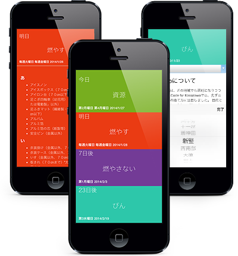
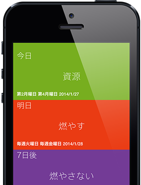

「いつ、どのゴミが収集されているのか？」
ゴミの問題はどの地域でも深刻になりつつあります。 Code for Kanazawaでは、先ずは正しいゴミの捨て方に注目しました。例えばお引っ越しをされた場合や、新しく金沢市に住むことになった時、このアプリを使えばすぐに分かるように、目的と使い方をとてもシンプルにデザインしました。


色でゴミのジャンルを表示
一番近いゴミの日とジャンルを上から順に表示しています。
捨てる事が可能なゴミ
ゴミのジャンルをタップすると、捨てることが可能なゴミの一覧を見ることができます。
設定
お住まいの地域を選択することで、ゴミ収集日が自動的に更新されます。今後スマートフォンのGPSから位置情報を取得する機能を追加する予定です。
更新情報
5374.jpに関する情報です
各地への広がり
2013年9月にCode for Kanazawaの手で誕生した5374.jpは、まず金沢市から始まりました。現在、石川県野々市市への展開など、各地へ広がりをみせています。ぜひ、あなたの町でも5374.jpを展開してみませんか？サブドメインが必要な際、ご連絡頂けましたらこちらで設定いたします！
あなたの町で5374.jpを利用したい
あなたの町でも5374.jpを利用することは可能です。5374.jpのソースコードはオープンになっています。こちらから是非ご利用ください。